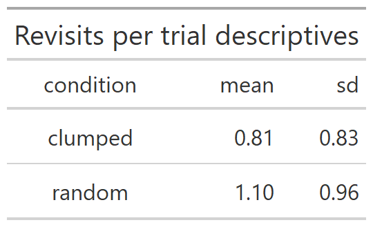
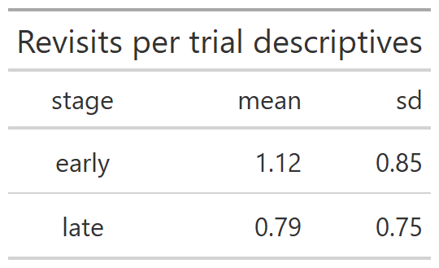
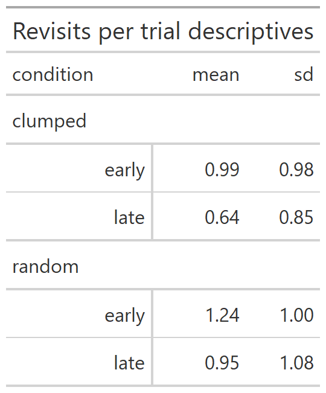

3 Experiment One Revisits Per Trial
3.1 Raw data
This line reads in the dataset that results from collating the results files for each participant.
e1 <- readRDS("fgms_e1_allsubs.rds")This renames the raw data but doesn’t do any operations on it.
# this tibble is one row for each tree visited saying whether it was a revisit or not
e1_revisits <-
e1 %>%
transmute(
pp = pid,
condition = R,
stage = as_factor(ifelse(trial<=5, "early", "late")),
progress = as_factor(trial),
index = index,
tree = tile,
is_a_revisit = revisit
)3.2 Aggregation 1: Trial counts
# First level of aggregation collapses over index and yields
# a count for each trial:
# each row is how many revisits they made on that trial
# THESE ARE TRIAL SUMS
TRIAL_SUMS <-
e1_revisits %>%
group_by(pp, condition, stage, progress) %>%
summarise(nrevisits = sum(is_a_revisit), .groups = "drop_last")3.3 Aggregation 2: Participant means
# Second level of aggregation collapses over trials
# each row is the average number of revisits that participant
# made in that combination of random/clumped and early/late
# THESE ARE PARTICIPANT MEANS
PARTICIPANT_MEANS <-
TRIAL_SUMS %>%
group_by(pp, condition, stage) %>%
summarise(meanrevisits=mean(nrevisits), .groups="drop_last")3.4 Descriptives
Condition descriptives
# To generate mean and sd properly for each level of condition
# (clumped/random), we first need data with one clumped score
# for each participant and one random score for each
# participant, averaging over early and late stages.
tempCond <- PARTICIPANT_MEANS %>%
group_by(pp,condition) %>% summarise(cmeans=mean(meanrevisits))
# Now we can ask for means and sd for clumped and random
# that each pp contributed one value to
CONDITION_DESCRIPTIVES <- tempCond %>%
group_by(condition) %>%
summarise(mean=mean(cmeans), sd=sd(cmeans))
# issue the table
CONDITION_DESCRIPTIVES %>%
gt() %>%
tab_header("Revisits per trial descriptives") %>%
fmt_number(columns = c("mean","sd"), decimals=2) %>%
gtsave("e1_tables/condition_means.png")
Stage descriptives
# To generate mean and sd properly for each level of stage,
# we first need to collapse over condition (clumped/random)
# to get one score for each participant per level of stage
# (early/late)
tempStage <- PARTICIPANT_MEANS %>%
group_by(pp,stage) %>%
summarise(smeans=mean(meanrevisits))
# Now we can ask for means and sd per level of stage
STAGE_DESCRIPTIVES <- tempStage %>%
group_by(stage) %>%
summarise(mean=mean(smeans),sd=sd(smeans))
# issue the table
STAGE_DESCRIPTIVES %>%
gt() %>%
tab_header("Revisits per trial descriptives") %>%
fmt_number(columns = c("mean","sd"), decimals=2) %>%
gtsave("e1_tables/stage_means.png")
SxC Descriptives
# To get the 2 x 2 interaction means, yielding a 2x2 table with mean and sd
SxC_DESCRIPTIVES <- PARTICIPANT_MEANS %>% group_by(condition,stage) %>% summarise(mean=mean(meanrevisits),sd=sd(meanrevisits))
SxC_DESCRIPTIVES %>%
gt(rowname_col = "stage", groupname_col = "condition") %>%
tab_stubhead(label = "condition") %>%
fmt_number(columns = c("mean","sd"), decimals=2) %>%
tab_header("Revisits per trial descriptives") %>%
gtsave("e1_tables/SxC_means.png")